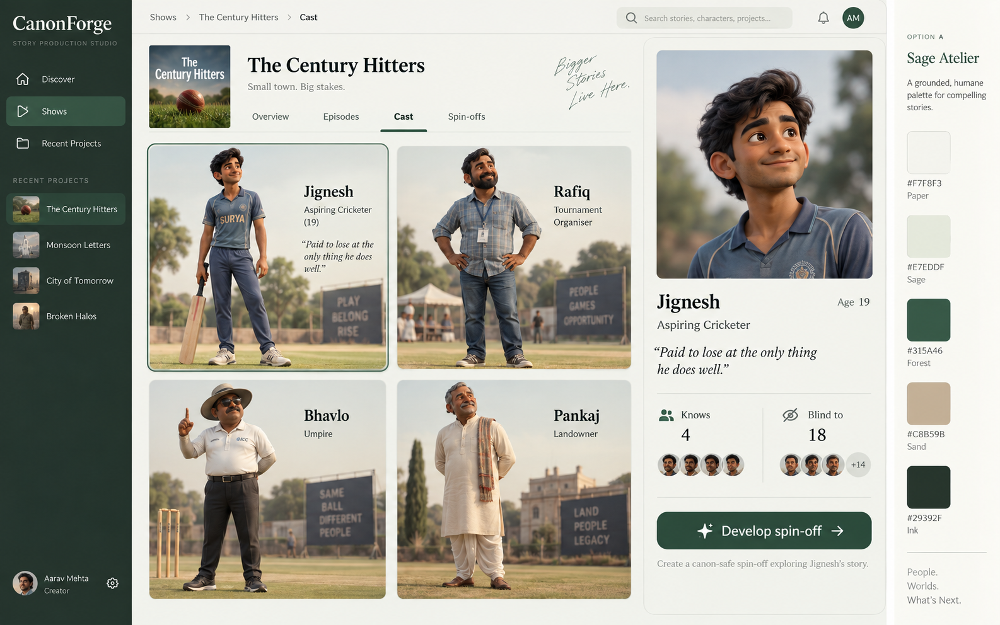
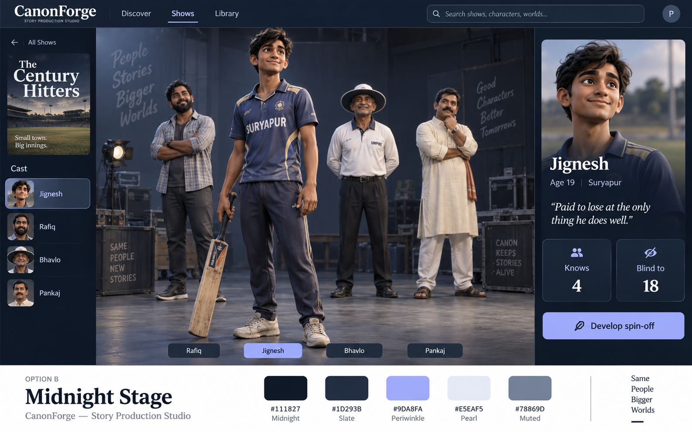
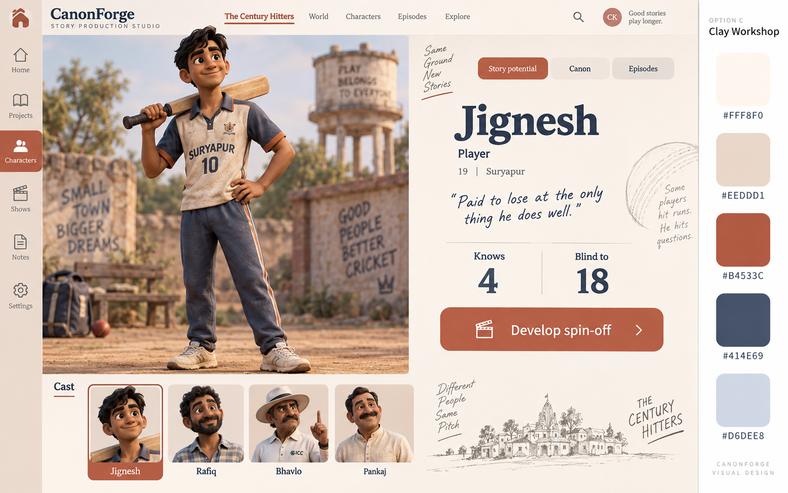

Three directions for the cast experience
Static visual concepts. Palette and component layout can be mixed across options.
A · Sage Atelier
Paper and forest green · persistent sidebar · cast grid · selected-character inspector

B · Midnight Stage
Midnight and periwinkle · character list · full 3D lineup · contextual story panel

C · Clay Workshop
Ivory and terracotta · navigation rail · large character stage · thumbnail filmstrip

Generated design explorations, not live 3D models. Final UI copy and knowledge indicators will use actual canon data; known and blind counts refer to moments, not people.